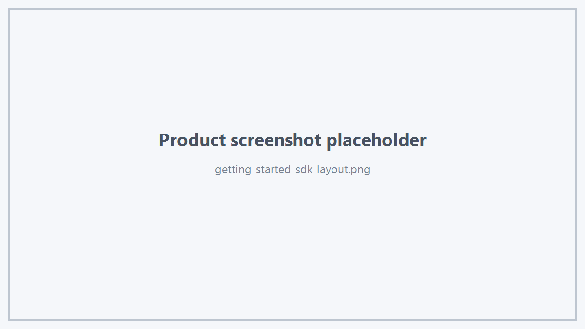

- 制作者
 1.18.0
1.18.0
推荐的 Windows 产品目录为：

其中：
当前 SDK 公开模块包括：
新应用推荐统一：
HtsViewerSdk.h 已包含主要公开数据类型定义所需头文件。
业务程序需要链接对应版本的：
运行时需要能够加载：
以及 SDK 发布包中列出的必要 Runtime。
SDK 公共类型不要求应用程序包含或链接 OpenSceneGraph。
不要在业务项目中为了使用 Hts Viewer SDK 主动增加：
除非业务程序自身另有独立 OSG 需求。
Hts Viewer SDK 的公开接口不要求 Open CASCADE。
如果 Viewer Demo 为了演示 STEP / IGES 文件加载使用了独立 CAD Import 模块，该模块属于 Demo 应用层，不属于 Viewer SDK 对外依赖。
请确保：
来自同一个 Hts Viewer SDK Release。
不建议混用不同版本的公开头与 DLL。
最直接的方法是编译并运行：
如果 Demo 已发布，也可以先运行 Hts Viewer Demo 验证运行环境。